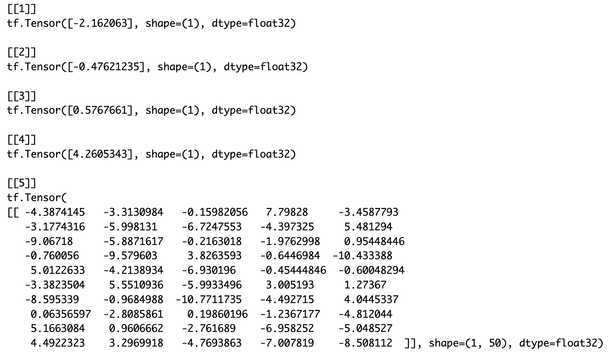
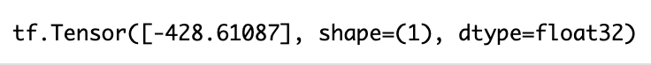
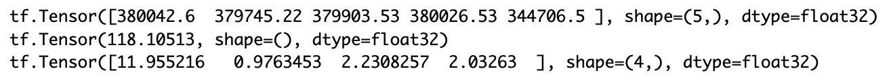

Bayesian Linear Regression TF v rstanarm
Source:vignettes/intro_normal_tf_stan.Rmd
intro_normal_tf_stan.RmdKey features covered in vignette
- how to build a simple Bayesian linear regression
model
- setup the design matrix
- generate MLE estimates as initial conditions for MCMC
- comparison of numerical results against rstanarm
- show how to match rstanarm’s centering of predictors and auto-scaled priors
This example uses simulated data.
Click here for the full R Markdown file that generated all the outputs shown here.
Example data set
This example uses a simple simulated generated as follows:
set.seed(1001)
nperarm<-25 # N per arm
T1 <-rep(c(0,1),nperarm); # treatment arm (binary)
X1<-rnorm(n=2*nperarm,mean=10,sd=2) # continuous covariate
y <- rnorm(n=2*nperarm,mean=1+X1+2*T1,sd=2) # Normal response
thedata<-data.frame(y=y,X=X1,T=T1)
my_table1_object <- head(thedata) %>%
kable() %>%
kable_styling(full_width = F) %>%
column_spec(1, bold = T, color = "darkgreen")
# Save the object
saveRDS(my_table1_object, "precomputed/vg3_table1.rds")| y | X | T |
|---|---|---|
| 13.356671 | 14.377296 | 0 |
| 9.035462 | 9.644905 | 1 |
| 7.388691 | 9.629449 | 0 |
| 9.809291 | 4.986928 | 1 |
| 10.407850 | 8.885377 | 0 |
| 13.874070 | 9.712881 | 1 |
Example Model - Formulation
Standard additive model with Gaussian response and identity link function with priors for the intercept, slope and scale parameters.
\[ \begin{aligned} \text{y}_i &\sim \text{N}(\mu_i, \phi^2) \\ \mu_i &= \alpha + \beta_{\text{1}} X_{i} + \beta_{\text{2}} T_{i} \\ \alpha &\sim \text{N}(0, a_{h}) \\ \beta_{\text{1}}, \beta_{\text{2}} &\sim \text{N}(0, b_{h}) \\ \sigma &\sim \text{Exponential}(c_{h}) \end{aligned} \] where \(a_h, b_h\) and \(c_h\) are fixed hyper-parameters.
rstanarm
We first fit the model using rstanarm library using it’s high level interface. When using the rstanarm library it is important to read the specific documentation as:
- internal predictor centering may be applied by default (including Normal response as here)
- predictor centering is also applied to binary variables and factors
- some priors maybe auto-scaled by default
Centering does not alter the parameter estimates but does impact how the model is coded, while the second does alter estimates but is designed to do so in a small (and sensible) way. But using TFP in R then it is easy to also utilize the auto-scaled priors computed by RStan (as below), allowing direct numerical comparisons between these two libraries.
We run the rstanarm Normal regression model and capture the priors used as some of these have been auto-scaled by stan_glm. These same priors will then be used in RStan and TFP. The only parameter auto-scaled is the scale parameter but the code shows how to do this for the slope parameters also (but not needed here).
# Note on Rescaling
# note for models that do internal predictor centering then need location shift back for intercept
# i.e y = a + b*(x1-mean) + c*(x2-mean)
# the interpretation of a on non-centered predictors is value of y at x1=0 and x2=0
# so want a at x1=0 and x2=0 so E(y) = mean(a) + mean(b)*-mean(x1) + mean(c)*-mean(x2) etc.
# Estimate Bayesian version with stan_glm
stan_glm1 <- stan_glm(y ~ X + T, data = thedata, family = gaussian(),
prior = normal(0, 2.5),
prior_intercept = normal(0, 5),
seed = 12345,
warmup = 10000, # Number of warmup iterations per chain
iter = 20000, # Total iterations per chain (warmup + sampling)
thin = 1,
chains = 4,
refresh=0) # turn off iteration output for compactness
res_m<-as.matrix(stan_glm1)
#summary(res_m[,"(Intercept)"])
# now get the priors used by rstanarm for use in RStan and TFP
prior_scales<-prior_summary(stan_glm1)
# get the predictor adjusted scale - stating priors explicitly so no autoscaling
beta_prior_scale<-prior_scales$prior$scale
# aux is always re-scaled -next line always needed
sd_prior_scale<-prior_scales$prior_aux$adjusted_scale #need 1/sd_prior_scale for exp
## now send the observed data and the new priors to python for use later with TFP
py$thedata<-r_to_py(thedata)
rescaled_sd=c(beta_prior_scale,1/sd_prior_scale)
py$rescaled_sd<-r_to_py(rescaled_sd) RStan
We now reproduce the same analysis in RStan rather than rstanarm as this requires more model specific details which can then be implemented in TFP. - we pass the computed priors from rstanarm above which we extracted from the stanfit results object
# RStan code
set.seed(12345)
# --- Define the Stan model as a string in R ---
stan_model_string <- "
data {
int<lower=1> N; // Number of observations
int<lower=1> M; //number of predictors excl intercept
array[N] real<lower=0> y; // Response variable (counts)
vector[N] X; // Continuous predictor
vector[N] T; // Binary predictor
//Hyperparameters
array[M] real<lower=0>rescaled_sd;// to hold auto-scaled priors from rstanarm
}
transformed data {
vector[N] X_centered;
real mean_X=mean(X);
vector[N] T_centered;
real mean_T=mean(T);
X_centered = X - mean_X; // Center in transformed data block
T_centered = T - mean_T;
}
parameters {
real alpha; // Intercept
real beta_X; // Coefficient for roach1
real beta_T; // Coefficient for treatment
real<lower=0> phi; // scale parameter
}
transformed parameters {
array[N] real mu;
for (i in 1:N) {
// this is mean for each data point and will go into likelihood function
mu[i] = alpha +
beta_X * X_centered[i] +
beta_T * T_centered[i] ;
}
}
model {
// --- Priors ---
// Weakly informative priors for coefficients and intercept
alpha ~ normal(0, 5.0); // Prior for intercept
// the next parameters are passed from R as taken from rstanarm
beta_X ~ normal(0,rescaled_sd[1] ); // Prior for wt coefficient
beta_T ~ normal(0, rescaled_sd[2]); // Prior for am coefficient
phi ~ exponential(rescaled_sd[3]); // Prior for scale
// --- Likelihood ---
y ~ normal(mu, phi);
}
generated quantities {
// compute intercept paramater back on non-centred axes
real intercept_0;
intercept_0=alpha + beta_X*-mean_X + beta_T*-mean_T;
}
"
# --- Prepare data for Stan ---
# The data needs to be provided as a list for rstan::stan()
stan_data <- list(
N = nrow(thedata),
M = 3, # number of passed hyperpriors
rescaled_sd=c(beta_prior_scale,1/sd_prior_scale),# 1/ as prior uses rate
y = thedata$y,
X = thedata$X,
T = thedata$T
)
# --- Fit the Stan model ---
# Use rstan::stan() to compile and sample from the model
fit <- stan(
model_code = stan_model_string,
data = stan_data,
chains = 4, # Number of MCMC chains
warmup = 10000, # Number of warmup iterations per chain
iter = 20000, # Total iterations per chain (warmup + sampling)
thin = 1, # Thinning rate
seed = 12345, # For reproducibility
refresh=0,
control = list(adapt_delta = 0.95, max_treedepth = 15) # Adjust for sampling issues if needed
)
# --- 5. Extract main parameters and produce density plots ---
res2<-extract(fit,par=c("alpha","beta_X"," beta_T","phi","intercept_0"))Comparison of results rstanarm v RStan
The plots below show a simple comparison of densities between rstanarm and RStan, and it’s clear these are virtually identical as we hoped. We now implement the same model into TFP

TFP
We now implement the above model in TFP
import numpy as np
import pandas as pd
import os
import keras
import tensorflow as tf
import tensorflow_probability as tfp
from tensorflow_probability import distributions as tfd
tfb = tfp.bijectors
import warnings
import time
import sys
## The data.frame passed is now a panda df but for TPF this needs to be further
## converted into tensors here we simply convert each col of the data.frame into
## a Rank 1 tensor (i.e. a vector)
y_data=tf.convert_to_tensor(thedata.iloc[:,0], dtype = tf.float32)
X_data=tf.convert_to_tensor(thedata.iloc[:,1]-np.mean(thedata.iloc[:,1]), dtype = tf.float32)
T_data=tf.convert_to_tensor(thedata.iloc[:,2]-np.mean(thedata.iloc[:,2]), dtype = tf.float32)
rescaled_sd=tf.convert_to_tensor(rescaled_sd, dtype = tf.float32)
# rescaled_sd is also available here# Define LIKELIHOOD - this is defined first, as functions need defined before used
# The arguments in our function are in the REVERSE ORDER that the parameters
# appear in JointDistrbutionSequential this is essential
def make_observed_dist(phi,beta_T,beta_X,alpha):
# Compute linear mean: mu = alpha + beta * x
# When sampling 3 times:
# alpha: (3,), beta: (3,), x_data: (10,)
# Need to broadcast to (3, 10)
alpha_expanded = tf.expand_dims(alpha, -1) # (3, 1)
beta_X_expanded = tf.expand_dims(beta_X, -1) # (3, 1)
beta_T_expanded = tf.expand_dims(beta_T, -1) # (3, 1)
mu = alpha_expanded + beta_X_expanded * X_data + beta_T_expanded * T_data # (3, 1) + (3, 1) * (10,) = (3, 10)
# Expand sigma to broadcast
phi_expanded = tf.expand_dims(phi, -1) # (3, 1)
# return a vector of Gaussian probabilities, one for each obs
return(tfd.Independent(
tfd.Normal(loc = mu, scale = phi_expanded), #define as logits
reinterpreted_batch_ndims = 1 # This tells TFP that log_prob here is a single value
# equal to sum of individual log_probs, a vector
# this is usual when defining a data likelihood
))# DEFINE FULL MODEL - hyperparams hard coded
# model is y[i] = Bernoulli(p[i]) where logit(p[i]) = intercept + treatment*z[i]
model = tfd.JointDistributionSequentialAutoBatched([
tfd.Normal(loc=0., scale=5.0, name="alpha"), # prior intercept after centering
tfd.Normal(loc=0.,scale=rescaled_sd[[0]], name="beta_X"), # prior slops
tfd.Normal(loc=0., scale=rescaled_sd[[1]], name="beta_T"), # prior for slope
tfd.Exponential(rate=rescaled_sd[[2]], name="phi"), # prior for scale
# now finally define the likelihood as we have already defined parameters in this
make_observed_dist # the data likelihood defined as a function above
])
tf.random.set_seed(9999)
# Sample one variate from this joint probability model - shows what structure the model
# produces/needs. i.e. what the state variable of the model looks like in TF
mysample=model.sample(1) # 1 = one random variate
#print(f"{mysample}")
print(py$mysample)
Define the log_prog_fn
To use the various MCMC samplers provided in TFP we need to explicitly provide a function which returns the log of the posterior density. This is straightforward and simply involves wrapping around the existing model method log_prob() as seen below.
# the ordering of the arguments in this must match exactly the ordering used in
# JointDistributionSequentialAutoBatched
def log_prob_fn(alpha,beta_X,beta_T,phi):
return model.log_prob((
alpha,beta_X,beta_T,phi,y_data))
## last argument is the DATA (y)
# useful to see how to call this. We use the simulated values above
mylogp=log_prob_fn(mysample[0], mysample[1], mysample[2],mysample[3])
print(py$mylogp)
def neg_log_prob_fn(pars):
alpha=pars[[0]]
beta_X=pars[[1]]
beta_T=pars[[2]]
phi=pars[[3]]
"""Unnormalized target density as a function of states."""
return -model.log_prob((
alpha, beta_X,beta_T,phi, y_data))
#### get starting values by find MLE
if(True):
start = tf.constant([0.1,0.1,0.1,0.1],dtype = tf.float32) # Starting point for the search.
optim_results = tfp.optimizer.nelder_mead_minimize(neg_log_prob_fn,
initial_vertex=start, func_tolerance=1e-04,max_iterations=1000)
print(optim_results.initial_objective_values)
print(optim_results.objective_value)
print(optim_results.position)
# bijector to map contrained parameters to real
unconstraining_bijectors = [
tfb.Identity(),
tfb.Identity(),
tfb.Identity(),
tfb.Exp()
]
num_results=20000
num_burnin_steps=10000
sampler = tfp.mcmc.TransformedTransitionKernel(
tfp.mcmc.NoUTurnSampler(
target_log_prob_fn=log_prob_fn,
step_size=tf.cast(0.5, tf.float32)), #tf.cast(0.1, tf.float32)),
bijector=unconstraining_bijectors
)
adaptive_sampler = tfp.mcmc.DualAveragingStepSizeAdaptation(
inner_kernel=sampler,
num_adaptation_steps=int(0.8 * num_burnin_steps),
target_accept_prob=tf.cast(0.8, tf.float32))
istate = optim_results.position
n_chains=4
current_state = [tf.expand_dims(tf.repeat(istate[0],repeats=n_chains,axis=-1),axis=-1),
tf.expand_dims(tf.repeat(istate[1],repeats=n_chains,axis=-1),axis=-1),
tf.expand_dims(tf.repeat(istate[2],repeats=n_chains,axis=-1),axis=-1),
tf.expand_dims(tf.repeat(istate[3],repeats=n_chains,axis=-1),axis=-1)
]
# Speed up sampling by tracing with `tf.function`.
@tf.function(autograph=False, jit_compile=True,reduce_retracing=True)
def do_sampling():
return tfp.mcmc.sample_chain(
kernel=adaptive_sampler,
current_state=current_state,
num_results=num_results,
num_burnin_steps=num_burnin_steps,
seed= tf.constant([9199, 9999], dtype=tf.int32),
trace_fn=None)#lambda current_state, kernel_results: kernel_results)
t0 = time.time()
#samples, kernel_results = do_sampling()
samples = do_sampling()
t1 = time.time()
print("Inference ran in {:.2f}s.".format(t1-t0))
samples = list(map(lambda x: tf.squeeze(x).numpy(), samples))alpha = tf.reshape(samples[0], [-1])
beta_X = tf.reshape(samples[1], [-1])
beta_T = tf.reshape(samples[2], [-1])
phi = tf.reshape(samples[3], [-1])
# need to re-locate prior back to original - reverse centering
intercept0=alpha + beta_X*-np.mean(thedata.iloc[:,1]) + beta_T*-np.mean(thedata.iloc[:,2])